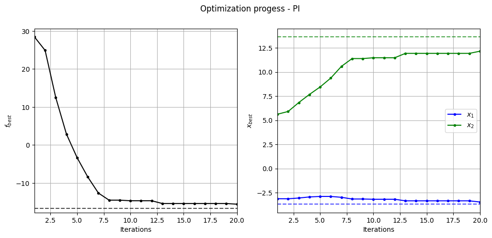
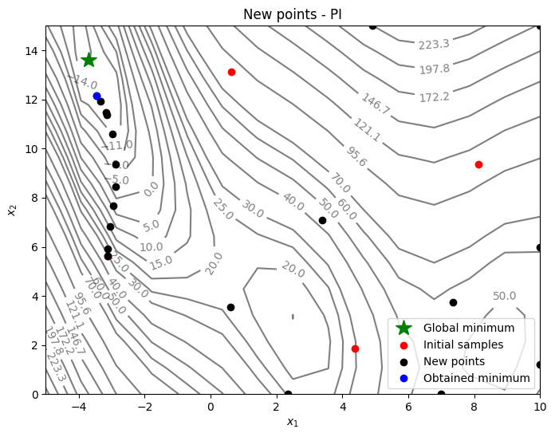

Probability of Improvement#
This section describes another approach for performing balanced exploration and exploitation. Specifically, probability of improvement (PI) is used as the acquisition function. The auxiliary optimization problem is written as:
where PI is written as
where \(\Phi\) is the cumulative distribution function of the standard normal distribution, \(f^*\) is the current best value, and \(\mu(\mathbf{x})\) and \(\sigma(\mathbf{x})\) are model prediction and uncertainty in prediction (standard deviation) from surrogate model, respectively. Note that \(\hat{f}\) follows a normal distribution since it is modeled using a GP. So, PI measures the probability that prediction at a given point \(\mathbf{x}\) beats the current best value. Note that the acquisition function optimization is a maximization problem.
Below code imports required packages and defines modified branin function:
import numpy as np
import torch
from pyDOE3 import lhs
import matplotlib.pyplot as plt
from scipy.stats import norm as normal
from scimlstudio.models import SingleOutputGP
from scimlstudio.utils import Standardize, Normalize
from gpytorch.mlls import ExactMarginalLogLikelihood
from pymoo.core.problem import Problem
from pymoo.algorithms.soo.nonconvex.de import DE
from pymoo.optimize import minimize
from pymoo.config import Config
Config.warnings['not_compiled'] = False
# Defining the device and data types
args = {
"device": torch.device('cuda' if torch.cuda.is_available() else 'cpu'),
"dtype": torch.float64
}
def modified_branin(x: np.ndarray) -> np.ndarray:
"""
Function for computing modified branin function value at given input points
"""
x = np.atleast_2d(x)
x1 = x[:,0]
x2 = x[:,1]
a = 1.
b = 5.1 / (4.*np.pi**2)
c = 5. / np.pi
r = 6.
s = 10.
t = 1. / (8.*np.pi)
y = a * (x2 - b*x1**2 + c*x1 - r)**2 + s*(1-t)*np.cos(x1) + s + 5*x1
return np.expand_dims(y,-1)
lb = np.array([-5., 0.])
ub = np.array([10., 15.])
/home/pkoratik/miniconda3/envs/sm/lib/python3.12/site-packages/tqdm/auto.py:21: TqdmWarning: IProgress not found. Please update jupyter and ipywidgets. See https://ipywidgets.readthedocs.io/en/stable/user_install.html
from .autonotebook import tqdm as notebook_tqdm
Below code block defines pymoo problem class and initializes differential evolution algorithm:
class ProbabilityOfImprovement(Problem):
def __init__(self, gp, lb: np.ndarray, ub: np.ndarray, fbest: float):
"""
Class for defining auxiliary optimization problem that uses
probability of improvment as the acquisition function
"""
# initialize parent class
super().__init__(n_var=lb.shape[0], n_obj=1, n_constr=0, xl=lb, xu=ub)
# store variables
self.gp = gp
self.fbest = fbest
def _evaluate(self, x, out, *args, **kwargs):
# convert to torch tensor
x = torch.from_numpy(x).to(self.gp.x_train)
# get mean prediction and std in prediction
y_mean, y_std = self.gp.predict(x)
std_variable = (self.fbest - y_mean.numpy(force=True)) / y_std.numpy(force=True)
# store the objective value as numpy array
out["F"] = - normal.cdf(std_variable) # negating since pymoo minimizes
# Optimization algorithm
algorithm = DE(pop_size=15*lb.shape[0], F=0.9, CR=0.8, seed=1)
BO loop#
Below code implements BO loop with PI-based acquisition function. Four initial samples are used with a maximum function evaluation budget of 24. This implies that there will be 20 iterations of the loop. The initial samples are generated using latin hypercube sampling. A Gaussian process model is used to approximate the modified Branin function since it provides both point-prediction and uncertainty in prediction.
# variables
num_init = 4
max_evals = 24
num_evals = 0
# initial training data
x_train = lhs(lb.shape[0], samples=num_init, criterion='cm', iterations=100, seed=1)
x_train = lb + (ub - lb) * x_train
y_train = modified_branin(x_train)
# increment evals
num_evals += num_init
idx_best = np.argmin(y_train)
fbest = [y_train[idx_best]]
xbest = [x_train[idx_best]]
print("Current best before loop:")
print("x: {}".format(xbest[-1]))
print("f: {}".format(fbest[-1]))
print("\nLCB Loop:")
# loop
while num_evals < max_evals:
print(f"\nIteration: {num_evals-num_init+1}")
# GP
gp = SingleOutputGP(
x_train=torch.from_numpy(x_train).to(**args),
y_train=torch.from_numpy(y_train).to(**args),
output_transform=Standardize,
input_transform=Normalize,
)
mll = ExactMarginalLogLikelihood(gp.likelihood, gp) # marginal log likelihood
optimizer = torch.optim.Adam(gp.parameters(), lr=0.01) # optimizer
# Training the model
gp.fit(training_iterations=1000, mll=mll, optimizer=optimizer)
# Find the minimum of surrogate model
result = minimize(ProbabilityOfImprovement(gp, lb, ub, fbest[-1]), algorithm, verbose=False)
# Computing true function value at infill point
y_infill = modified_branin(result.X)
print("New point (based on PI):")
print("x: {}".format(result.X))
print("f: {}".format(y_infill.item()))
# Appending the the new point to the current data set
x_train = np.vstack(( x_train, result.X.reshape(1,-1) ))
y_train = np.vstack((y_train, y_infill))
# increment evals
num_evals += 1
# Find current best point
idx_best = np.argmin(y_train)
fbest.append(y_train[idx_best])
xbest.append(x_train[idx_best])
print("Current best:")
print("x: {}".format(xbest[-1]))
print("f: {}".format(fbest[-1]))
fbest = np.array(fbest)
xbest = np.array(xbest)
Current best before loop:
x: [-3.125 5.625]
f: [28.46841701]
LCB Loop:
Iteration: 1
/home/pkoratik/miniconda3/envs/sm/lib/python3.12/site-packages/gpytorch/distributions/multivariate_normal.py:376: NumericalWarning: Negative variance values detected. This is likely due to numerical instabilities. Rounding negative variances up to 1e-10.
warnings.warn(
New point (based on PI):
x: [-3.12497745 5.62452311]
f: 28.47412292017433
Current best:
x: [-3.125 5.625]
f: [28.46841701]
Iteration: 2
New point (based on PI):
x: [-3.12963687 5.90910931]
f: 24.910195937805916
Current best:
x: [-3.12963687 5.90910931]
f: [24.91019594]
Iteration: 3
New point (based on PI):
x: [-3.05097723 6.83440305]
f: 12.471393288176264
Current best:
x: [-3.05097723 6.83440305]
f: [12.47139329]
Iteration: 4
New point (based on PI):
x: [-2.93965386 7.67424583]
f: 2.875028620016014
Current best:
x: [-2.93965386 7.67424583]
f: [2.87502862]
Iteration: 5
New point (based on PI):
x: [-2.88739217 8.44758494]
f: -3.330797165242588
Current best:
x: [-2.88739217 8.44758494]
f: [-3.33079717]
Iteration: 6
New point (based on PI):
x: [-2.88668755 9.36729606]
f: -8.419167892248767
Current best:
x: [-2.88668755 9.36729606]
f: [-8.41916789]
Iteration: 7
New point (based on PI):
x: [-2.97837564 10.58066911]
f: -12.66198575148805
Current best:
x: [-2.97837564 10.58066911]
f: [-12.66198575]
Iteration: 8
New point (based on PI):
x: [-3.15355274 11.38732793]
f: -14.529339219819803
Current best:
x: [-3.15355274 11.38732793]
f: [-14.52933922]
Iteration: 9
New point (based on PI):
x: [2.33866453e+00 2.66478686e-11]
f: 23.930637921362656
Current best:
x: [-3.15355274 11.38732793]
f: [-14.52933922]
Iteration: 10
New point (based on PI):
x: [-3.17919781 11.47134028]
f: -14.6916897425468
Current best:
x: [-3.17919781 11.47134028]
f: [-14.69168974]
Iteration: 11
New point (based on PI):
x: [ 4.91331582 15. ]
f: 224.20539118972067
Current best:
x: [-3.17919781 11.47134028]
f: [-14.69168974]
Iteration: 12
New point (based on PI):
x: [10. 1.22564785]
f: 55.10196705849332
Current best:
x: [-3.17919781 11.47134028]
f: [-14.69168974]
Iteration: 13
New point (based on PI):
x: [-3.34385653 11.92536259]
f: -15.418350031465083
Current best:
x: [-3.34385653 11.92536259]
f: [-15.41835003]
Iteration: 14
New point (based on PI):
x: [0.61641599 3.54013333]
f: 23.251444948330636
Current best:
x: [-3.34385653 11.92536259]
f: [-15.41835003]
Iteration: 15
New point (based on PI):
x: [6.98724591e+00 3.17145216e-11]
f: 53.662810195235124
Current best:
x: [-3.34385653 11.92536259]
f: [-15.41835003]
Iteration: 16
New point (based on PI):
x: [10. 15.]
f: 195.87219087937612
Current best:
x: [-3.34385653 11.92536259]
f: [-15.41835003]
Iteration: 17
New point (based on PI):
x: [10. 5.99626233]
f: 60.903019831662554
Current best:
x: [-3.34385653 11.92536259]
f: [-15.41835003]
Iteration: 18
New point (based on PI):
x: [7.35090386 3.74960333]
f: 57.476650372102405
Current best:
x: [-3.34385653 11.92536259]
f: [-15.41835003]
Iteration: 19
New point (based on PI):
x: [3.39876545 7.08683388]
f: 42.74599950365614
Current best:
x: [-3.34385653 11.92536259]
f: [-15.41835003]
Iteration: 20
New point (based on PI):
x: [-3.46507615 12.15049857]
f: -15.591460792125305
Current best:
x: [-3.46507615 12.15049857]
f: [-15.59146079]
Below code plots the evolution of optimum point with respect to number of iterations:
fig, ax = plt.subplots(1, 2, figsize=(12, 5))
ax[0].plot(fbest, ".k-")
ax[0].set_xlabel("Iterations")
ax[0].set_ylabel("$f_{best}$")
ax[0].axhline(y=-16.64, c="k", linestyle="--", alpha=0.7)
ax[0].set_xlim(left=1, right=fbest.shape[0]-1)
ax[0].grid()
ax[1].plot(xbest[:,0], ".b-", label="$x_1$")
ax[1].plot(xbest[:,1], ".g-", label="$x_2$")
ax[1].axhline(y=-3.689, c="b", linestyle="--", alpha=0.7)
ax[1].axhline(y=13.630, c="g", linestyle="--", alpha=0.7)
ax[1].set_xlim(left=1, right=xbest.shape[0]-1)
ax[1].set_ylabel("$x_{best}$")
ax[1].set_xlabel("Iterations")
ax[1].legend()
ax[1].grid()
_ = plt.suptitle("Optimization progess - PI")

Below code plots the infill points added during the optimization process:
num_pts_per_dim = 15
x1 = np.linspace(lb[0], ub[0], num_pts_per_dim)
x2 = np.linspace(lb[1], ub[1], num_pts_per_dim)
X1, X2 = np.meshgrid(x1, x2)
x = np.hstack(( X1.reshape(-1,1), X2.reshape(-1,1) ))
Z = modified_branin(x).reshape(num_pts_per_dim, num_pts_per_dim)
# Level
levels = np.linspace(-17, -5, 5)
levels = np.concatenate((levels, np.linspace(0, 30, 7)))
levels = np.concatenate((levels, np.linspace(40, 60, 3)))
levels = np.concatenate((levels, np.linspace(70, 300, 10)))
fig, ax = plt.subplots(figsize=(8,6))
# Contours and global opt
CS=ax.contour(X1, X2, Z, levels=levels, colors='k', linestyles='solid', alpha=0.5, zorder=-10)
ax.clabel(CS, inline=1)
ax.plot(-3.689, 13.630, 'g*', markersize=15, label="Global minimum")
# Points
ax.scatter(x_train[0:num_init,0], x_train[0:num_init,1], c="red", label='Initial samples')
ax.scatter(x_train[num_init:,0], x_train[num_init:,1], c="black", label='New points')
ax.plot(xbest[-1][0], xbest[-1][1], 'bo', label="Obtained minimum")
# asthetics
ax.legend()
ax.set_xlabel("$x_1$")
ax.set_ylabel("$x_2$")
_ = ax.set_title("New points - PI")

Based on the infills, PI seems to be slightly more biased towards adding points closer to the minimum value in the dataset - less exploration and more exploitation - and there is no way to control that through the criteria itself. As a result, PI-based method lingers around local optimum and requires more iterations to reach global optimum. As discussed in the lecture, PI provides only a probability value and doesn’t quantify the amount of improvement. We need a better acquisition function that can quantify the improvement.
NOTE: Due to randomness in differential evolution, results may vary slightly between runs. So, it is recommended to run the code multiple times to see average behavior.